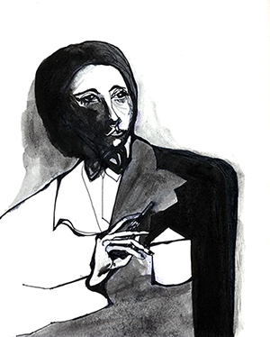
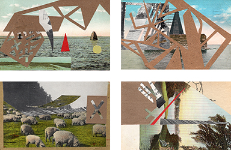
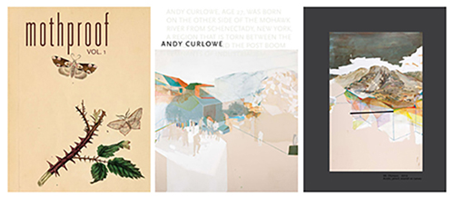

Education
2014-2017 M.F.A. Candidate in Graphic Design, Rhode Island School of Design.

2007 B.A. in American Studies, University of California, Berkeley.
Visual Studies and Ethnicity concentration.
High Honors Senior Thesis: Women-Run Photography Studios in San Francisco, 1848-1906.
Graduated Magna Cum Laude; High Honors in the Major; and Phi Beta Kappa.
Publications (Abbreviated)
Author (Preface):
Play! Indoor and Outdoor. Sandu Cultural Media, 2011.X-House: Exceptional Dwellings. Sandu Cultural Media, 2010.
Cover Design:
Type Image. Gingko Press, 2011.Project Manager:
Marci Washington-For Forever I'll Be Here. Gingko Press, 2014.New York Nights. Gingko Press, 2012.
Os Gemeos. Gingko Press and ICA Boston, 2012.
Editor:
BANKSY-You Are An Acceptable Level of Threat. Carpet Bombing Culture, 2012.Conceptual Architecture. Sandu Cultural Media, 2010.
Understanding Media: Critical Edition. Marshall McLuhan. Gingko Press, 2011.
Emigre No. 70 - The Look Back Issue (1984-2009). Gingko Press, 2009.
Flip the Script: A Guide for Aspiring Vandals and Typographers. Gingko Press, 2013.
Mike Giant: Eternal. Gingko Press, 2013.
Installation Art: Space as Medium in Contemporary Art. Sandu Cultural Media, 2010.
John Van Hamersveld-Fifty Years of Graphic Design. Gingko Press, 2013.
MAYDAY-The Art of Shepard Fairey. Gingko Press, 2010.
Now and Then-The Cabinet Card Paintings of Alex Gross. Gingko Press, 2012.
Paper Works. Sandu Cultural Media, 2012.
Plant Graphics. Sandu Cultural Media, 2013.
Scandinavian Graphic Design. Sandu Cultural Media, 2012.
Silkscreen Basics. Gingko Press, 2011.
Sketchbook Selections-Ryan McGinness. Gingko Press, 2013.
The Art of Package Design. Gingko Press, 2011.
Tiffany Bozic: Drawn by Instinct. Gingko Press, 2012.
Whet My Appetite: Catering Graphic Design. Sandu Cultural Media, 2013.

Awards
William Stout Award for Best UC Berkeley Undergraduate Architectural History Paper, 2005-06.World Affairs Council of San Francisco scholarship to study abroad in Italy, summer 2001.
Youth of the Year scholarship awarded by Exchange Club of Richmond and San Pablo, 2002.
Exhibitions
October 2011 "The Delicacy of an Unknown Person" Halmoni Gallery solo show, Oakland, CA.Teaching Experience
Fall 2015 Teaching Assistant to Lucinda Hitchcock, RISD Design Studio 11/2007-8/2007 Art Teacher at Murphy Elementary After-School Program, Richmond, CA
Taught a group of twenty-three first-graders. Developed and implemented lesson plans.
Professional Experience
10/2015-5/2016 EPSCoR Communications Assistant, RISD Nature Lab, Providence, RICollaborates with Rhode Island EPSCoR on communication strategies for the RISD Nature Lab.
Creates photographic and video documentation; selects and edits existing images.
Creates diagrams and illustrations; designs visual communication materials including posters, fliers, and brochures; edits video and audio posts.
Attends and writes brief summaries of EPSCoR events for media outlets; produces and/or collects images for articles and posts.
12/2015-present SendPoints Publishing Freelance Copy Editor
2/2015-present Gingko Press Freelance Editor / Typesetter
06/2015-08/2015 Elwyn and Jennifer Berlekamp Foundation Designer, Berkeley, CA
11/2013-08/2014 TheStorefront.com Contract Photographer, San Francisco, CA

Fall 2012 Mothproof Magazine Editor-In-Chief / Graphic DesignerContacted artists worldwide, edited, and designed a new art and prose magazine.
10/2008-8/2013 Gingko Press Senior Editor / Graphic Designer / Sales Representative /
Marketing and Publicity Coordinator, Berkeley, CA
Edited brief and full-length publications and wrote book descriptions, jacket copy, and prefaces.Marketing and Publicity Coordinator, Berkeley, CA
Helped acquire new titles to be published and sought out undiscovered projects for publication.
Controlled image database of thousands of book images, converted files, and edited and created images in Photoshop, Illustrator, or InDesign.
Designed cover images and directed interior design for books, coordinated with printers internationally, and prepared images, text, and full book files for publication.
Communicated with authors and other publishers internationally in order to create a biannual catalog.
Designed fliers, press releases, and a printed product catalog every sales season.
Facilitated collaboration with authors, designers, publishers, artists, distributors, and customers.
Controlled information and specifications for upcoming titles in multiple databases.
Represented the company in everyday communication and at special events and trade shows.
Planned book signings and author events, designed and wrote press releases, and launched campaigns.
Communicated with newspapers, bloggers, magazines, and press for new titles publicity.
Visited multiple sales territories across the U.S. and Canada for biannual appointments with owners and buyers at book stores, galleries, museums, and shops, to take orders and maintain business.
8/2007-9/2008 Hastings Law College Disability Resource Program Assistant, San Francisco, CA
Served as liaison between disabled students and Hastings staff.
Researched accommodations for disabled students and communicated needs to outside agencies.
Edited newsletters and email communications to disabled students in the program.
6/2006-5/2007 Yerba Buena Center for the Arts Gallery Volunteer, San Francisco, CA
Represented galleries to the public.
Responded to visitor requests and worked to ensure positive experiences for visitors to the galleries.
Learned about each exhibit and served as a visitor guide.